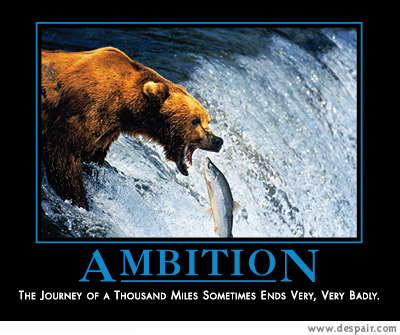
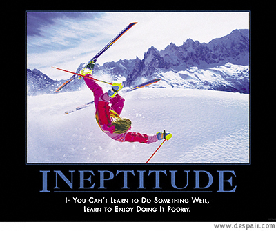
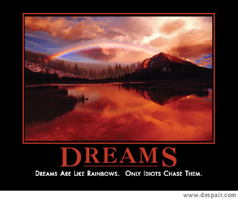
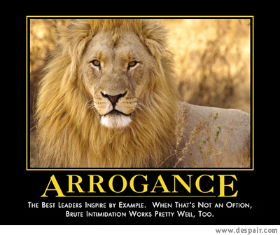
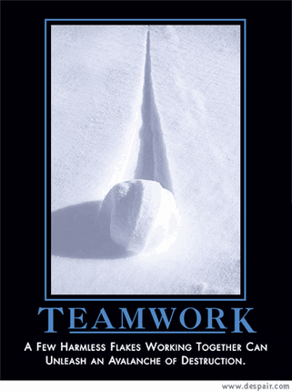
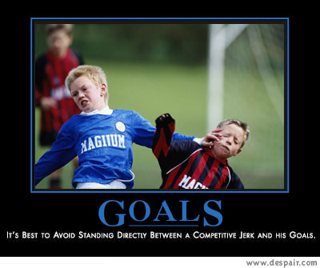
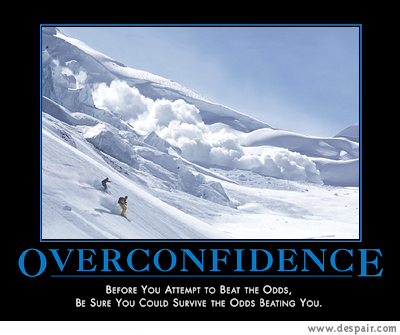
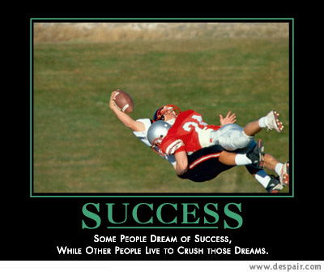
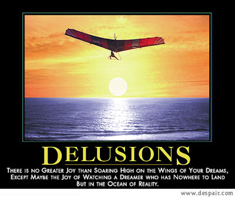
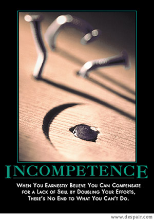

Player Experience - Fall 2003
The Webmaster's vast reservoir of creative prose has dried up.
After months of working for something funny... I've got nothing!!!
So, for this season, I have contracted out my responses (to the lowest
bidder, naturally).
Pop Culture
-
"After months of specialized training with Sensei Miyagi I was able
to learn the intricate "crane" kick and defeat Johnny Lawrence (you know,
the evil leader of the Cobra's) in the All Valley Karate Tournament.
I have since moved on to other interests such as volleyball. I am
currently attempting to master such moves as "swat the fly", "carry the
baby" and "throw the pizza" to complement my karate moves "wax
on, wax off" and "paint the fence". I am confident this experience
will add a rich variety to your league and enhance the competitive spirit."
--
Ron Thompson
Mr. Miyagi: [sighs] Ronnie-T-san, must talk. Man walk on
road. Walk left side, safe. Walk right side, safe. Walk down middle, sooner
or later, get squished [makes squish gesture] just like grape. Same here.
You volleyball do "yes," or volleyball do "no." You volleyball do "guess
so," [makes squish gesture] just like grape. Understand?
-
"Volleyball gives a Jedi his power, an energy
field created by all living things, it surrounds & penetrates us &
binds the galaxy up!" -- Fred Robinson
Yoda: "Remember... a Jedi's strength
comes from..."
-
"Mmmmmmmmmmmmmm, pancake..." -- John Gartner
Homer Simpson: "Mmm... crumbled up
cookie things!", "Mmm...snouts!"
Monty Burns: "Use an open-faced club..."
Apu: "And our beef jerky is nearly
rectum free!"
Humility (or not...)
-
"I can only improve." -- Jack Cochrane

-
"The volleyball goes over the net sometimes." -- Srinivas Savaram

-
"I went from C to AA in a only eight years." -- Bill Grennon

-
"Developing into a setter, something about gravity keeps me from hitting
well. Actually playing with a "AA" player so I'm getting first hand
arrogance knowledge." -- Ron Alger

-
"First player to win a championship without ever stepping foot onto
a court." -- Oscar Mulford

-
"Hothead, major headcase, unbearable, you know the type -- perfect for
your team!" -- Jack Griffith

-
"References provided upon request." -- Dan Leeds

-
"Been there, done that." -- Scott Watson

-
"If you don't know by now…" -- Linda Morley

-
"I'd like to think that I learned a lot during last year. I grew,
matured, blossomed, if you will. Because of these wonderful experiences
I'd like to take myself OUT of the running for Captain. I think this
would be best for all players, captains, commissioners, and Dee/Andrea.
" -- Micah Hoffman

OK... the Webmaster's back!!! I'm feeling abusive and I'm
running out of despair.com posters
:-)
Pragmatism
-
"It doesn't matter - the tee-shirts are the same for every level." --
Rick Toth
And Rick would know this how?
-
"Why bother? Gillick didn't post my last entry anyway." --
Greg Wohlford
Umm... was it as funny as this one?
Longevity
-
"Age and injuries beginning to overtake skill and experience." --
Joe Potts
Skill is overrated. The keys to success are guile, treachery,
Advil, and duct-tape.
-
"I named this website, and have the volleyball to prove it. Funny
thing is that volleyball still looks like new. " -- Bill Epstein
His volleyball looks new... but I think his last t-shirt looks quite
old. Coincidence? :-)
-
"20 seasons…I should be committed…" -- Andrea Stump
Uh huh... Andrea should commit. I don't think she takes this
league seriously yet :-)
-
"More than 23 years in this mixed league." -- John & Kathy Dean
Wow... John & Kathy just keep updating this counter every season.
And I thought Andrea was old :-)
Incomprehensible
-
"I learned everything I know on the harsh courts of the Germantown Soccerplex.
It's dog eat dog out there, but I'm keepin' it real with my solid v-ball
street cred. Yo. Peace." -- Paul Dethlefsen
-
"Leagues: D,C,B,BB,A at BSD,RSP,FDDL,DDS,MAV,BP,MC,MM,CK,etc.
6s,4s,2s - only even numbers, never 5s,3s,or 1s." -- Evan Glickstein
The Webmaster is not certain that either of the statements have
any foundation in the English language. Street cred? Is that
something you scrape of the bottom of your car?
Well... that's it for me. CYA L8R BSD. Yo. Peace.
Send comments/suggestions about this page to the Webmaster.
Send comments/suggestions about the league to: Comments